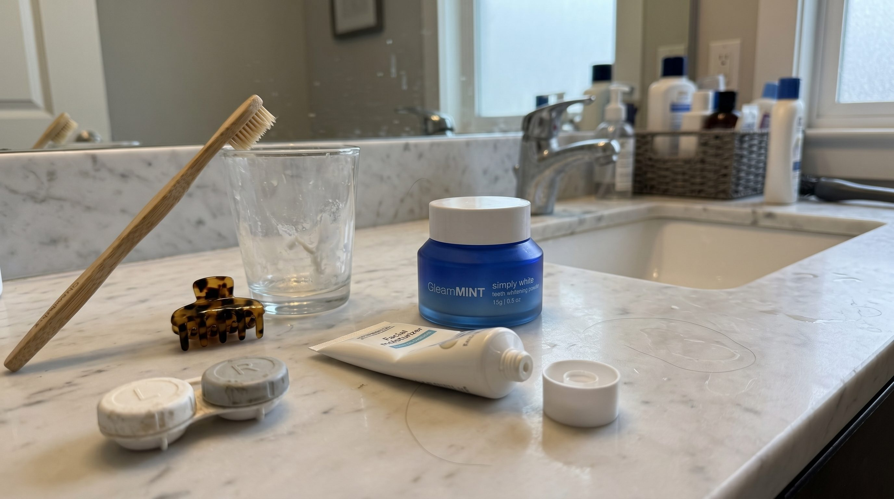
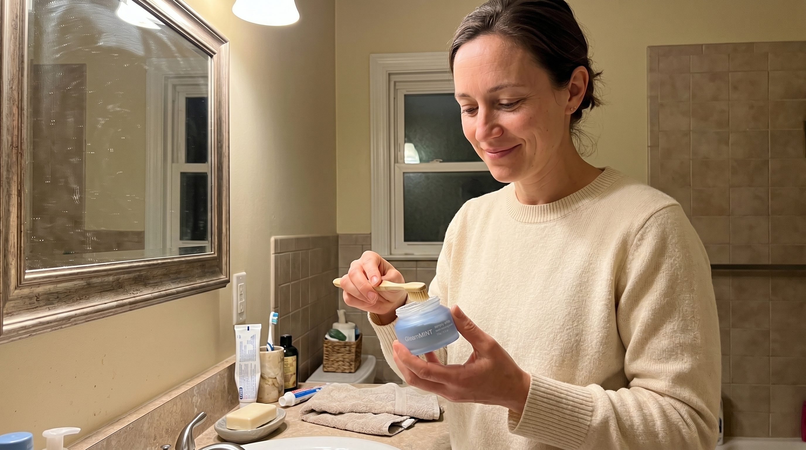
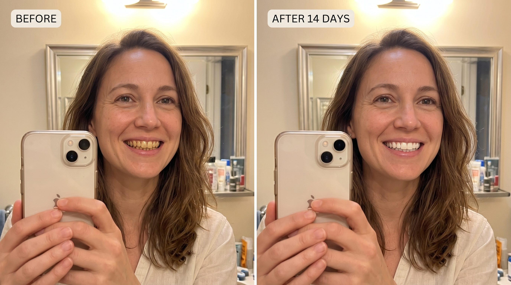
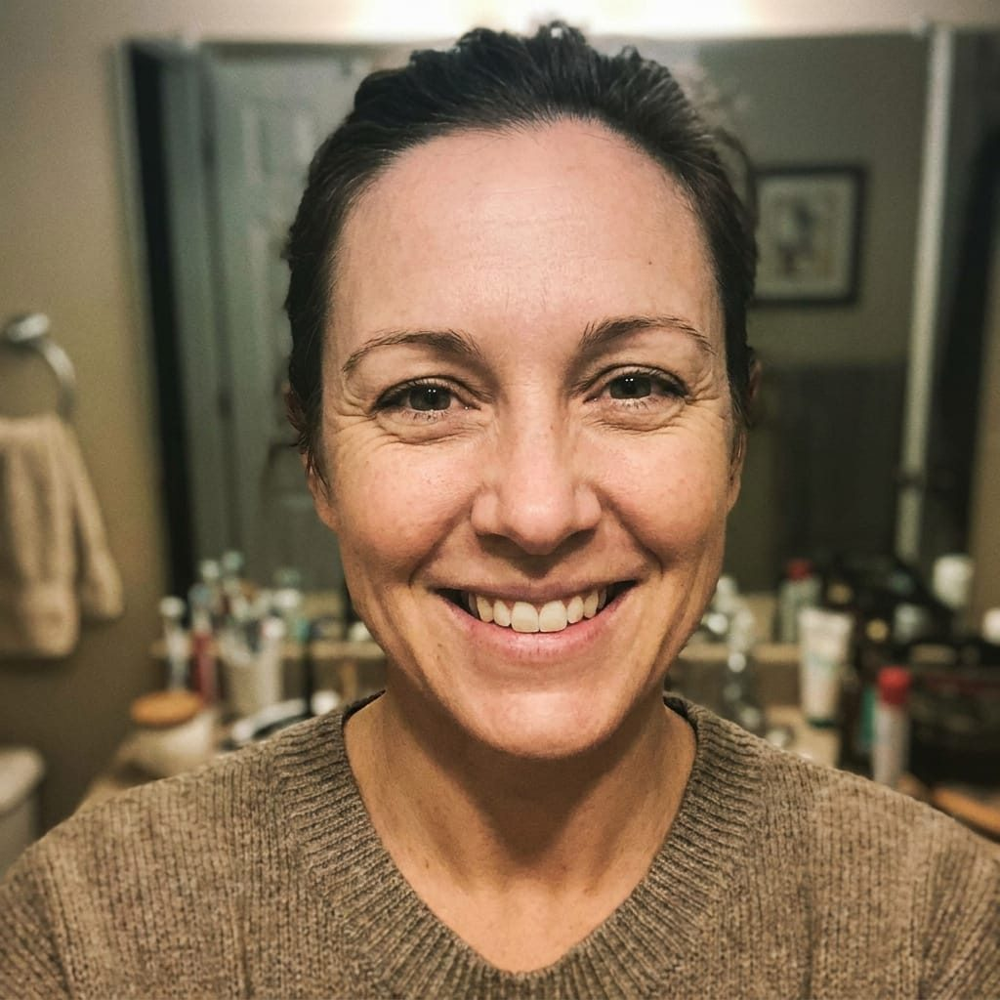

A Dental Hygienist Whispered to Me: "Stop Using Whitening Strips. Use This Instead."
Two years of strip-burn sensitivity. One 90-second tip from my hygienist. Day 14 photos at the bottom of this article.
I avoided the dentist for two years. The whitening strips I bought from a TikTok ad gave me sensitivity so bad I could not drink cold water without flinching. I did not want anyone to know.
When I finally booked a cleaning, I almost canceled twice. The first thing my hygienist did was ask me, gently, if I was using strips. The chalky white banding along my front teeth had given me away.
I nodded.
What she said next, and the small jar she told me to order on my way home, is the reason I can drink cold water again. It is also the reason my teeth are visibly several shades whiter than they were 14 days ago.
The conversation she did not have to have
Halfway through my cleaning, she set down her scaler and looked at me directly.
You have been using strips, have you not.
It was not a question. I nodded again.
I am not really supposed to tell patients this, because some of our revenue comes from in-office whitening. But you did not hear it from me. Stop using peroxide. There is something better. It is cheaper, it whitens just as well, and it does not burn.
She told me what to buy. The active ingredients were ones I had not heard of. PAP+, she said, and nano-hydroxyapatite. She had been quietly recommending it to friends and family for two years. The tip took her about 90 seconds.
It whitens just as well as peroxide. It does not burn. And it actually repairs the enamel while it works. There is no reason the consumer market should still be peroxide-first. My hygienist, off the record
What I found when I went looking for the science
I went home and did what any journalist with sore teeth does. I looked up the research.
I expected hype. What I found was a quiet, consistent body of peer-reviewed work, mostly out of European and Asian dental journals, that backs up what my hygienist said almost word for word.
A 2026 study in the Journal of Functional Biomaterials compared PAP+ side by side against hydrogen peroxide on human enamel.1 Same staining, same tooth surfaces. The PAP+ teeth ended up just as white. But where the peroxide-treated teeth showed visible damage on the enamel surface, the PAP+ teeth did not. That damage is what causes the cold-water sensitivity. PAP+ skips it.
Nano-hydroxyapatite is, if anything, more interesting. A 2025 review summarized four decades of clinical research into the ingredient,2 which has been used in Japanese dental products since the early 1980s. It is chemically identical to natural enamel. The literature documents that it actually repairs the surface of the tooth while it whitens, rather than chipping away at it.
This was not fringe science. It was just science that had not been packaged into a consumer product most Americans had heard of.
The product my hygienist quietly recommended is called GleamMint. They publish their full research references directly on their order page. See the offer here.
I switched. Here is what happened.
The jar arrived in three days. It is smaller than I expected. About the size of an espresso cup. The powder inside is pale and chalky, almost like a fine baking soda. The instructions on the lid are three lines long. Wet the brush. Dip. Brush for two minutes.


Brush, dip, brush. The taste was mild. Real mint, no chemical sting. I spent the rest of the evening bracing for the cold-water flinch that always followed strip use. It did not come. That alone was worth the price of admission.
My partner, who had watched me wince through two years of whitening attempts, asked what I had done differently. I had not said a word to him. He asked again three days later.
I took a phone selfie in the same bathroom mirror I had photographed myself in the year before. Same time of day, same overhead bulb. The shift was small but real, and clearly visible in the same light. (See below.)
I went back to the dentist for a follow-up. My hygienist was not on shift. The dentist who saw me commented, unprompted, that my gum line looked clean. I left without filling out the in-office whitening upsell form.

Why this one and not the dozen others
There are now a handful of consumer brands using PAP+ and hydroxyapatite formulations. I have not tested all of them. What sold me on GleamMint specifically:
The references are on the page. Most whitening brands hide behind buzzwords. GleamMint publishes the actual peer-reviewed studies directly on its order page, with PubMed links. You can read the same papers I read.
The active ingredient concentrations are listed. They tell you exactly how much PAP+ and hydroxyapatite is in the jar. Most competitors do not.
It does not advertise on TikTok. Which is how I ended up with the strips in the first place.
The 30-day refund is real. I checked the reviews before I bought. Multiple customers reported quick, clean refunds. (One reader below confirms.)
GleamMint is running an introductory offer right now: 50% off the first jar, 30-day refund if it does not work for you, free US shipping on orders over $40.
Check current availabilityA note on disclosure
This article contains affiliate links. Health & Wellness Daily may earn a commission if you choose to purchase via a link on this page, at no additional cost to you. The editorial content (the personal account, the choice of cited research, the recommendation) was produced independently of the commercial arrangement and reviewed by our medical contributors before publication.
Send the jar back full or empty within 30 days if it does not work for you. You will not need to.
Check current availabilityReferences
- Phthalimidoperoxycaproic Acid (PAP) Versus Peroxides and Impact on Dental Enamel After Whitening Treatment: An In Vitro Study. Journal of Functional Biomaterials, MDPI, 2026. View on PMC
- The Remineralizing and Desensitizing Potential of Hydroxyapatite in Dentistry: A Narrative Review of Recent Clinical Evidence. Journal of Functional Biomaterials, MDPI, 2025. View on PMC
- Tooth-Whitening with a Novel Phthalimido Peroxy Caproic Acid: Short Communication. Clinical, Cosmetic and Investigational Dentistry, 2024. View on PMC
- Effectiveness and Safety of Over-the-Counter Tooth-Whitening Agents Compared to Hydrogen Peroxide In Vitro. International Journal of Molecular Sciences, MDPI, 2023. View on PMC
- A Radical-Free Approach to Teeth Whitening. Dentistry Journal (Dent J Basel), MDPI, 2021. View on PubMed
- Clinical and Technological Evaluation of the Remineralising Effect of Biomimetic Hydroxyapatite in a Population Aged 6 to 18 Years: A Randomized Clinical Trial. Bioengineering (Basel), MDPI, 2025. View on PMC
Reader comments (1,247)

C.A.M.Verified 4 days ago